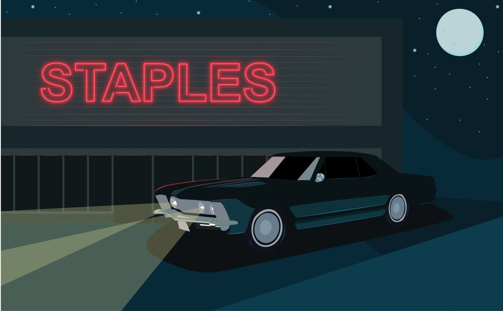
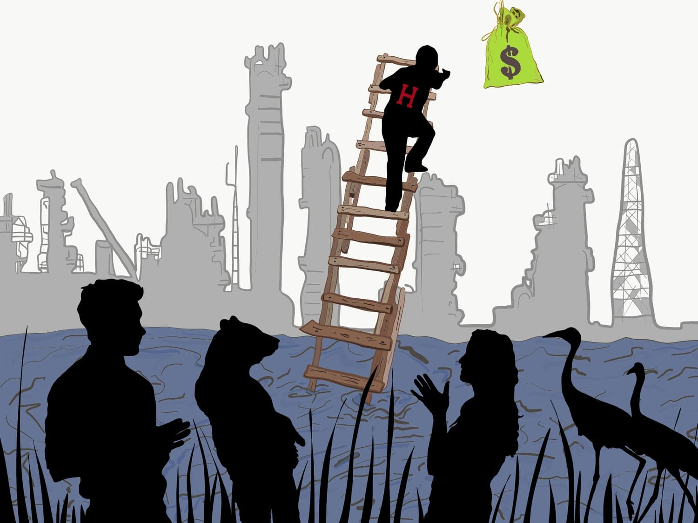
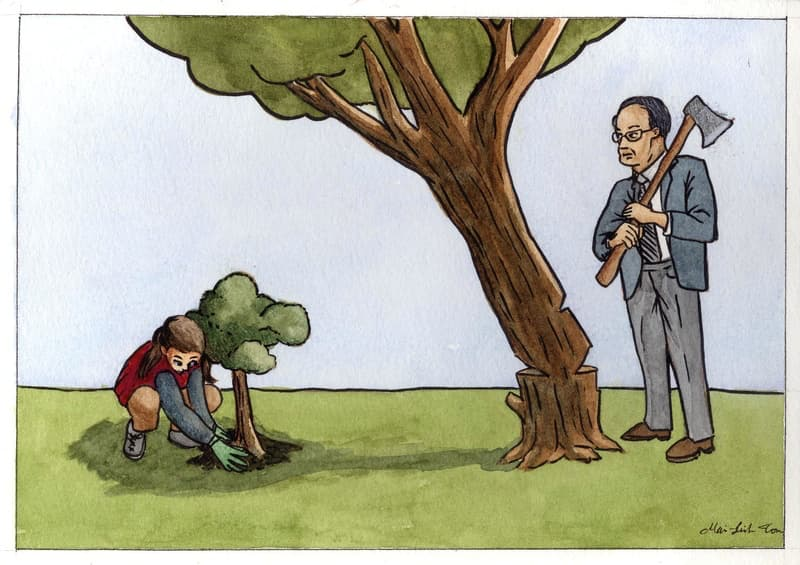
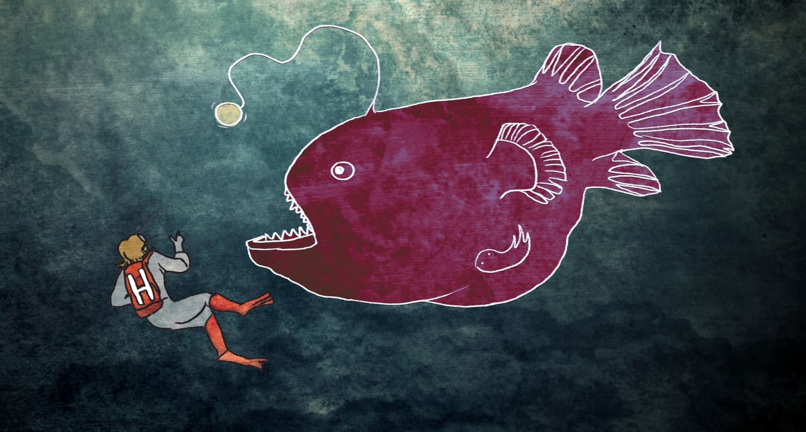

Illustration
A picture is worth a thousand words.
Tools

Illustration gives artists a platform to create original artwork and enhance writing from across the Crimson with strong visual storytelling. Illustrators learn a range of skills and techniques, including digital illustration, watercolor, marker, and pen. They exercise a lot of flexibility, whether they're creating standalone cartoons or working hand-in-hand with Editorial, Arts, and FM.
Sample Work

By Mireya C. Arango
By Patricia J. Liu

By Maria H. Park
By Mai-Linh Ton

By Mai-Linh Ton

By Mai-Linh Ton